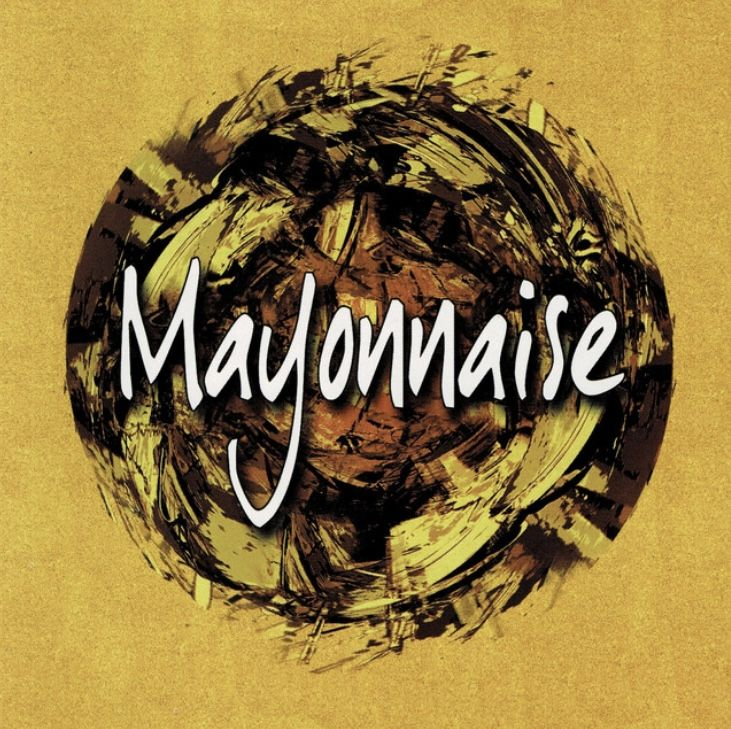
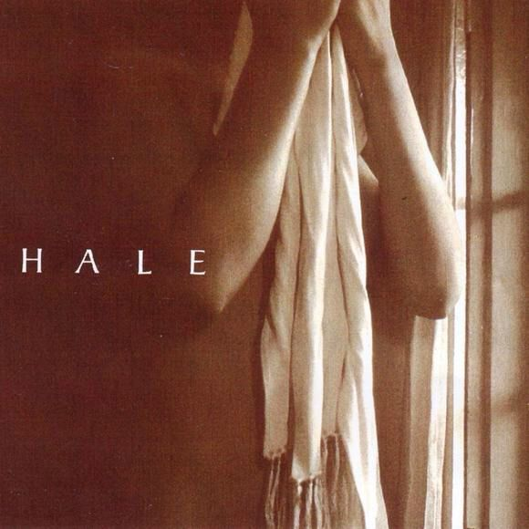
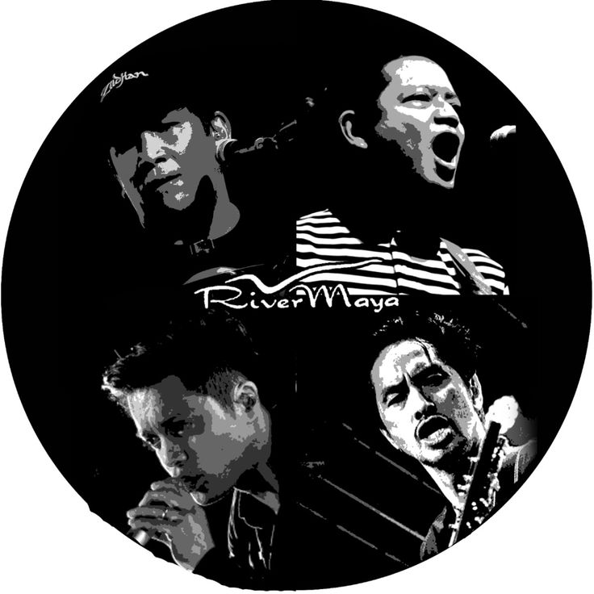
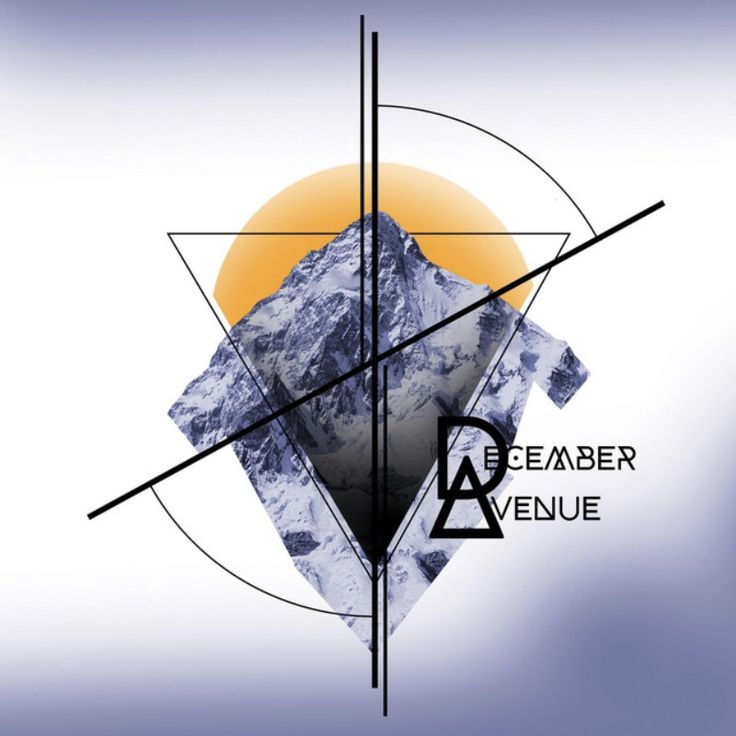
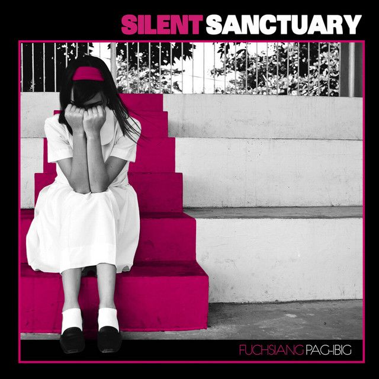
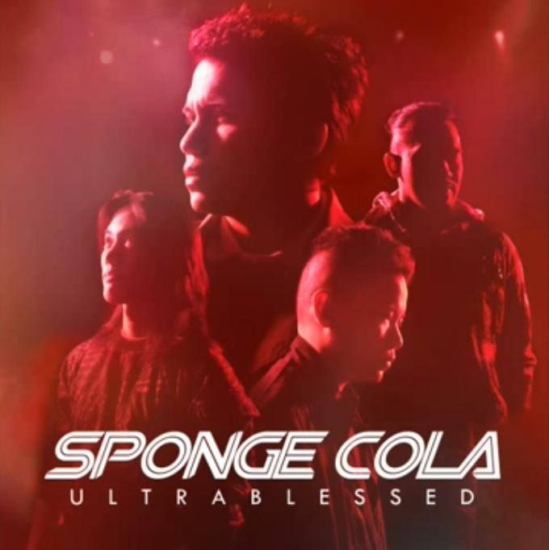

Artist: Mayonnaise
A powerful OPM alternative rock anthem that explores the crossing of senses.

Artist: Hale
A melancholic yet beautiful track about the void left by a loved one.

Artist: Rivermaya
An iconic song of comfort and protection. Its soaring melodies are timeless.

Artist: December Avenue
A track that blends alternative rock with soulful storytelling and silent prayers.

Artist: Silent Sanctuary
A modern take on the traditional Filipino love song with rock and strings.

Artist: Sponge Cola
A song about patience and the joy of finally finding the one you've been waiting for.